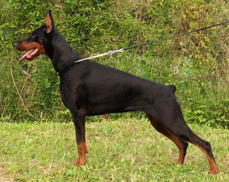

Външен вид
Високо, стройно и хармонично свързано куче с квадратен формат.
Елегантните линии на тялото му, гордата стойка и незаменимият характер го правят незаменим компаньон
и самоотвержен защитник, ако се наложи.
В същото време са много дружелюбни и добри към стопаните си.
Таблица с характеристики